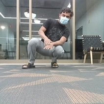
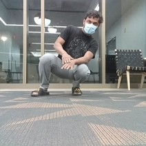
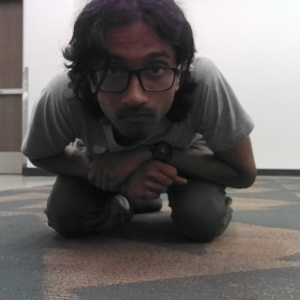
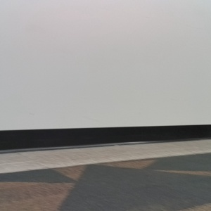
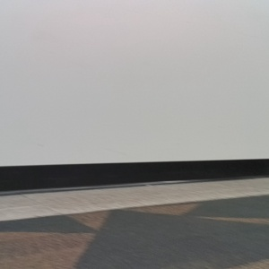
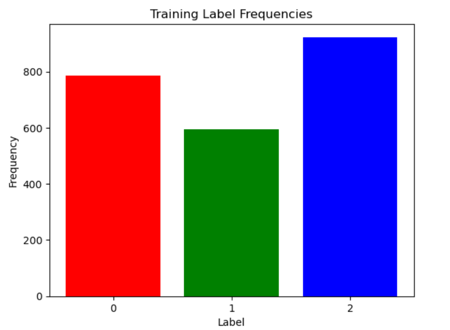

Introduction
The main objective of this project is to detect the absence or presence of facemask using the OAK-D camera feed of turtlebot by deploying Neural Networks. If the turtlebot camera detects a face without mask, it displays the output image as 'without mask' and move towards the detected face.
Training data and Neural network for mask detection is custom made, MTCNN (inbuilt algorithm) is being used for face coordinates.
An insight of Project Goals and procedure that we have followed and results obtained are briefly discussed here
Team Members:
Karthick Subramanian
Rohan Khare
Praveen Paidi
a. Updates/Refreshes
- We made our own Neural Network for the feature generation by taking training data of images from OAK-D camera.
- From the custom NN model, We deployed model to ROS node which does face mask recognition in real time by subscribing to real time data current_frame.
- We used inbuilt software called MTCNN face detection algorithm for creation of the bounding box for faces which is also subscribing to real time data current_frame.
- We published a custom topic /go/image from face mask recognition ROS node to MTCNN_vel_pub(fcae tracking) node which is subscriber to /go/image and publishes /cmd/vel.
- If the MTCNN_vel_det(face tracking) is being sent face without mask, it publishes velocity to move towards that face by using Face bounding box coordinates.
We tried mapping classroom environment, but due to constraints we sticked to main scope of project which is NN deployment. We aim to improve by performing dynamic obstacle avoidance (SLAM).
b. Project Process
Although we were able to deploy custom model to ROS node in the previous week, Due to accuracy and some other constraints we revised the schedule from the last week and performed required tasks such as data collection and real time deployment with iterations.
Following is the Process chart:
The complete work flow of our project as follows:

c. Work Flow
-
Initially we collected dataset consisting of huge variations i.e Face with mask and Without Mask at different distances from OAK-D camera at different backgrounds with multiple gestures being performed.
-
Few Instances of preliminary dataset
- With Face Mask - If the frame has a face with mask. - Class 0


 

- Without Face Mask - If the frame has a face without mask and some ambiguity cases of half frames and fully blurred faces. - Class 1


- No recognizable face in Frame - If the frame has no recognizable face and some distant images which are very unclear. - Class 2


Custom Neural Network for Face mask Detection:
Then with the custom Neural Network we devloped, we generated feature maps which shows as following:


Even in this zoomed in images, the amount of pixels covering pixels are very few and very difficult to classify the images based on mask from the limited data with high number of variations.
- Although training Accuracy is good by optimizing the algorithm and increasing number of epochs, testing accuracy is not good with only 65%. If we perform real time detection with this, it would be highly inaccurate.
Counter Measures
-
We updated the Training data with Face with and without mask at limited distance at proper light source with few gestures.
-
Few Instances of preliminary dataset
- With Face Mask - If the frame has face with mask


- Without Face Mask - If the frame has consisting of face without mask and some ambiguity cases of half frames and fully blurred faces.


- No recognizable face in Frame - If the frame has no recognizable face and some distant images which are very unclear.
 


-
we split the data into Training and Testing in 90% and 10% and Training accuracy as follows:
-
Training data Classification: 
-
Testing data Classification:

-
After Training on data, we got adequate accuracy in Training along with a good amount of testing accuracy of 89%
-
Training Accuracy:

-
With 89% testing accuracy, we tested on few absolute new images as well before deploying to ROS node for real time detection. It is predicting good, doesn't take much time as well.
-
We transferred the model_infernce to ROS node using tensorflow.
d. ROS Network
-
With model being imported, we created total of 3 nodes and 1 custom topic to complete actions.
-
Mask Detector node is a subscriber to /color/image and publishes custom topic /go/image, displays output windows of current frame and detection frame.
- face Detector node is a subscriber to /color/image and displays output window of bounding box.
-
face tracking node is a subscriber to /go/image and publishes /cmd/vel.
-
Complete ROS architecture
 rqt_gul_py for the generation of ROS graph is also shown in the graph.
rqt_gul_py for the generation of ROS graph is also shown in the graph.
e. Tradeoffs
Main Challenges
-
Training time
- As the Neural Network model is heavy, we trained set of images in GPU and obtained the model. Then transferred the model weights to ROS node to take one frame at a time.This has no lag and almost accurate.
-
Movement of Turtlebot
- For the Face detection and creating a bounding box, it takes more time in real time.As a result, output window with bounding box has a lag of few seconds. Which inturn carries the lag in moving the turtlebot towards the bounding box containing face without the mask.
-
Detection vs Movement
- Although Face mask detection takes place at real time, turtlebot is moving after few moments later the detection and viceversa.
Tradeoffs due to constraints
-
Fitting Training data
- We used Adam algorithm to save the training time.
- We chose number of epochs to 5 to not overfit on training data by considering bias and variance trade off.
- If we furthur increase the number of epochs, we may lose the testing accuracy.
-
Non Generalized Detection
- As the dataset is limited, detection using OAK-D camera at different environment with different person is not feasible.
- To detect, proper lighting and limited distance to the camera are required.
- With limited training data, we are able to test at few places with absolute new faces successfully.
-
Bounding box trade off
- We used face detection algorithm along with velocity subscriber not with face mask detector to increase the speed of detection.
- It significantly increased the speed of detection by almost 2 to 3 sec at the cost of movement of bot.
In overall process, we gave stress to reduce type 2 error (False Negative).
1. As it is a face mask detection, a person without mask should be detected properly.
2. If the bot has ambiguous case like image is blur or face is not complete in the frame, it is mostly detected as face without mask.
3. If the face is mostly out of the frame, it is being detected as no face recognized.
4. We trained the data accordingly to reduce the false negatives due to which there may be few errors during the transition of frames such as face entering or exiting the frame.
f. Videos of Working Model
Video 1- TURTLEBOT VIEW OF TESTING
Real time video of turtlebot view detecting face without mask:
Screen recording of mask is being pulled down and not covering the face. We have not trained this ambiguous cases earlier, still it is successfully detecting the classification
Video 2- AMBIGUOUS CASE TESTING WITH NO TRAINING
Real time video of turtlebot detecting face without mask:
* In this video, turtlebot movement of simultaneous ROS nodes in video1.
Video 3 - ABSOLUTE UNKNOWN FACE TESTING
RealTime detection of Presence or Ansence of mask with absolute zero training of Person's face
* In this video, Face present in the frame is not at all used in training data. It is still successfully able to detect the classification accurately and moving towards the face without mask.
g. Goals, Process and Results s
- An insight of Project Goals and procedure that we have followed and results obtained are briefly discussed in this: